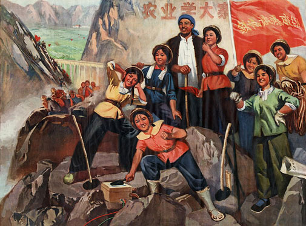
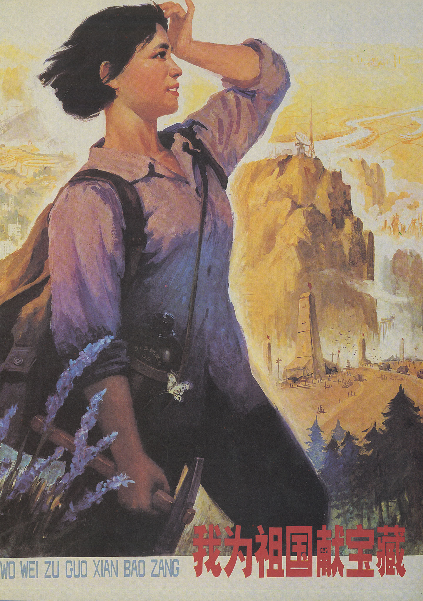

<!DOCTYPE html>
<html>

    <head>
    <link rel="stylesheet" href="boilerplate.css" />
	<link rel="stylesheet" href="styles.css" />
	<meta charset="utf-8">
    <meta name="viewport" content="initial-scale = 1.0,maximum-scale = 1.0" />
    <link href='https://fonts.googleapis.com/css?family=Oswald:400,300,700' rel='stylesheet' type='text/css'>
    </head>
    <body>

         <div id="hidNav">
            <ul class = "links">
                <li><a href="about.html" > ABOUT</a> </li>
                <li><a href="contact.html" > CONTACT</a> </li>
                <li><a href="sources.html" > SOURCES</a> </li>
            </ul>

            <ul class = "thumbnails">

                <li><a style="background-image: url(images/navImage1.jpg)" href="index.html" > INTRODUCTION</a> </li>
                <li><a style="background-image: url(images/navImage2.jpg)" href="ch1.html" > CONSCIOUSNESS RAISING</a> </li>
                <li><a style="background-image: url(images/navImage3.jpg)" href="ch2.html" > IRON GIRLS</a> </li>
                <li><a style="background-image: url(images/navImage4.jpg)" href="ch3.html" > CHALLENGING FEMININITY</a> </li>
                <li><a style="background-image: url(images/navImage5.jpg)" href="ch4.html" > THE TURNING <br />POINT</a> </li>

            </ul>
        </div>

        <div id="openNav"></div>​

    <div id="ch3p1" class="ch3p1 clearfix">
    </div>

    <div id="ch3p2" class="ch3p2 clearfix">
        <p id="ch3p2secondary">
        ANTI–COMMUNIST WRITERS WHO DEMONIZED POST 1949 CHINA ALSO NOTICED THE  “LIBERATION” OF CHINESE WOMEN. <br />
        </p>
    </div>

    <div id="ch3p3" class="ch3p3 clearfix">
    </div>

    <div id="ch3p4" class="ch3p4 clearfix">
        <p id="ch3p4copy">
        “Communism obliterated individuality to the extreme point of eliminating the difference between the sexes,” claimed the French commentator Robert Guillain. In China, “an important segment of the human race is apparently being led by Communism along the path of the future human anthill, where the only thought of the ant will be the thought of the anthill—industrious, uniform and sexless.”<br /><br />The challenge to femininity was more than at the superficial dress level. <br /><br />A visitor to China interviewed in the early 1960s by Christopher Lucas (author of <span class="italic">Women of China</span> claimed: “Why, they even walk like men, shoulders hunched and heavy-footed — a remarkable transformation.” <br /><br />Chinese women were not just dressing like men but were becoming men. In new China, “the street–cleaner is a woman, the duty foreman at the steel mill is a woman, the tram driver is a woman. So is the house surgeon at the workers’ hospital, the teller at the People’s Bank, the motor mechanic, the lathe–worker, and the river pilot. Building the Chungking railroad, it is the girl who blasts the dynamite charges, while on the Peking radio is a girl who denounces the treachery of Formosa. In Shanghai station it is a girl who dispatches the trains, while, near Peking’s meat market, the sentry is a girl, still in military khaki with a baby strapped incongruously to her back.”<br />
        </p>
        
        
        <p id="ch3p4copy1">
        Lucas’s list consists of occupations and tasks were considered in his time (and, it might reasonably be argued, even today) to be firmly located within the realm of men. Women were trespassing in this world when “like their husbands and brothers, they weave cotton, assemble cars and forge steel. They mix cement, saw lumber, drive trucks and load trains.” <br /> <br />This caused a conflict with orientalist stereotypes of Chinese (and other East Asian) women. In contrast to the naked and sensuously rounded figures in Orientalist portrayals of women in the harem, East Asian women were portrayed as a mix of subtly sensuous beauty combined with a graceful sense of decorum.  They were “willow–slim creatures, with eyes like crescent moons and skin more delicate than porcelain…They were fragile, submissive and secretive.”  The Chinese girls, according to Guillain, “turn out to be ugly or at least have become ugly. Has China ceased to produce the feminine beauties for which she was once famous?”  The contrast, therefore, between the idealized figure of the delicate Oriental woman and the black– booted communist worker seemed grotesque to those who were nostalgic for the Chinese woman of old.<br /><br />The Chinese woman, according to Lucas, was  “assured equal rights, equal labor and equal pay. By a stroke of the brush, the social values of three millennia were shattered and, most astounding of all—Woman, the eternal feminine, lost her identity.’” <br />
        </p>
    </div>

    <div id="ch3p5" class="ch3p5 clearfix">
        
    </div>

    <div id="ch3p6" class="ch3p6 clearfix">
        
        <p id="ch3p6pullout">
        The government seemed committed to implementing the slogan that “Women Hold Up Half the Sky” in industry, in family life through marriage reform, and in society at large. <br />
        </p>
        <p id="ch3p6copy">
        China’s achievements were well–noted outside China and served as a basis for new ideas about the possibilities for women: as workers, and as women. The vehemence of the sexist responses to changes in China speaks not only to orientalism but attests to the power of the changes that were happening in China as challenging conditions for all women.  <br />
        </p>
    </div>


    <div id="ch3p7" class="ch3p7 clearfix">
        <p id="text">
        UNTIL THE 1980s AND THE END OF THE MAOIST ERA, THEREFORE, CHINA WAS A POWERFUL BEACON FOR FEMINISTS OUTSIDE CHINA.<br />
        </p>
    </div>

    <div id = "ch3bottomnav">
        <a href="ch4.html" class="right"> <p class = "chapterRight"> CHAPTER 4: </p>  <p class = "titleRight"> THE TURNING POINT</p> </a>
        <a href="ch2.html" class="left"> <p class = "chapterLeft"> CHAPTER 2: </p> <p class = "titleLeft"> IRON GIRLS </p> </a>

    </div>
    </div>
<script src="http://code.jquery.com/jquery-1.11.0.min.js"></script>
    <script type="text/javascript">

            $("#openNav").click(function() {
                var menu = $("#hidNav");
                if ($(menu).is(":visible")) {
                    $(menu).animate({height: 0}, 500, function() {$(menu).hide();});
                } else {
                    $(menu).show().animate({height: 170}, 500);
                }
            });
    </script>


    </body>
</html>
